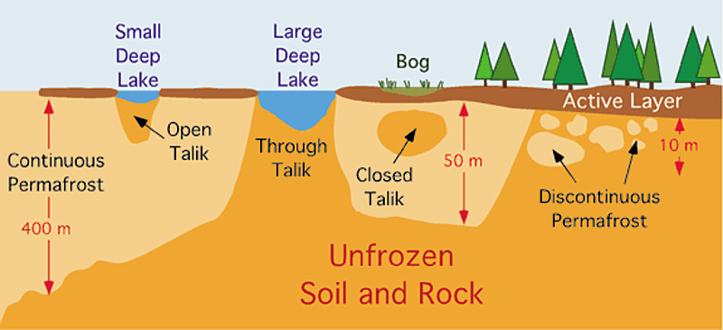

The Cryosphere
Week
GEOS 3410
ü™ë
Week / Schedule
Tuesday
- Review: Weeks 1–6
Thursday / Tuesday
- Ice on…
- land
- water
Outside of class
- Midterm Assessment I (Thursday Lab)
- Lab 6 due 11:59 pm on Friday(?)
Permafrost
Permafrost
Frozen soil
| Active layer | thaws seasonally |
|---|---|
| Permafrost | perenially frozen |
| Ice wedge | pure ice zones |

Permafrost
Frozen soil
| Active layer | thaws seasonally |
|---|---|
| Permafrost | perenially frozen |
| Ice wedge | pure ice zones |

Permafrost landscapes
Most permafrost is in the Northern Hemisphere


Permafrost and methane (CH4)
Methanogensis in wetlands (permafrost is basically frozen wetland)
- High water table (flooded)
- High flux of organic material
- Waterlogged soils → anoxia
- Methanogenesis requires anaerobic conditions
- Org-C → CH4 + energy

Permafrost and methane (CH4)
- Permafrost methane release slows after first few decades
- Mature bogs (like permafrost!) become fairly minor methane sources
Permafrost and methane (CH4)
Thawed wetlands are larger methane sources than melting permafrost

Permafrost degradation is still bad…
Why is this image concerning in the context of converting frozen organic C into atmospheric inorganic C (CO2)?

Glaciers
Glaciers
A perennial body of crystalline ice (& rock) that flows under its own weight.
Water ice
Flow in crystaline ice
Time lapse over 2.5 days (Source)
On top of the glacier: firn
Snow falls and gets compacted by weight of overlying snow.
Glaciers have bubbly ice

3 main types of glaciers
Mountain glacier
Topographically constrained
Linnébreen, Svalbard [ghe]


Glacial mass balance
Glaciers reflect the balance between
- Accumulation (snow)
- Ablation (melting)
Equilibrium line altitude (ELA): accumulation = ablation = 0.

Liquid water across a glacier
Supraglacial (above), englacial (within), subglacial (below)
Internal deformation ± basal sliding
Sliding beneath occurs when the base is lubricated- Liquid water at the base
- Soft, deformable sedimentary bed

Glacial geology
Till: glacial sediment
Beneath the glacier: erosion generates till
Abrasion: grinding bedrock with rock entrained in ice
Plucking: ice/water exploits bedrock cracks → coarse chunks of rock

Moraine: a large pile of till at a glacier's edge

Glacial periods are dusty
- Glaciers and ice sheets generate sediment-choked braided rivers
- Glacial periods are stormier, drier, windier.
- Strong winds blow dust over great distances.

Loess deposits: glacial windblown silts

Last glacial maximum (LGM)
Last glacial maximum
Larger ice masses, lower sea levels

Glacial Isostatic Adjustment (GIA)

LGM sea ice extents
Several models, including Pre-Industrial (PI, left). LGM → a lot more sea ice.

What would this have done to ocean circulation? (AMOC ∼ THC)
Ice shelves
Ice shelves – the floating limbs of ice sheets

Icebergs

Petermann Glacier, northern Greenland (NASA)
Importance of ice shelves
- Buttressing: the shelf pushes back on the glacier and slows it down.
- Ice shelf/cliff instabilities — runaway collapse from…
- Marine ice shelf instability: water penetrating a retrograde slope
- Marine ice cliff instability: oversteep ice cliffs collapse
Figure: Siegert+ 2020

Ice shelves & ice streams
Antarctic ice velocity
Ice streams

- Channels of very fast moving ice (meters/day)
- Drain majority of ice sheet volume
- Discussion: What is the relationship between ice streams, ice shelves, and ice sheet mass balance?
(No ice shelves around Greenland Ice Sheet currently)
Climate Data Store
Climate Data Store
Sea ice
Sea ice
Multi-year ice (aka "old ice") is multiple years old.
First year ice is ≤ 1 year old.

Sea ice
Fast ice is "landfast" — anchored to the shore, forms with tides.
Drift ice (pack ice) is free-floating.
Drift ice forms in leads
Thick multi-year ice splits apart to form leads, where new ice begins to form on the open water.

Analogous to tectonic divergent margins
Polynya: persistent open water

Young / first-year ice


During the first and following years, sea ice thickens by…

Pressure ridge
| Total thickness | Sail (mean) | Keel (mean) |
|---|---|---|
| 5–30 m | ≤ 2 m | 4.5 m |


{kind=link}
{kind=link}
{kind=link}
{kind=link}
{kind=link}
_Drawing.svg){kind=link}
{kind=link}
_Formation_Drawing3.svg){kind=link}
Analogous to tectonic convergent margins
Ice floes: loose multi-year ice
2 m to 10 km across

As these drift out from the polar regions, they eventually melt.
Seasonal sea ice
Two hemispheres, two seasons!


Sea ice grows/shrinks quickly. Why?

Sea ice in a changing climate
What melts more easily, first-year or old ice?
How might this set up a feedback in a warming climate?
Midterm Assessment I
This afternoon — 12:45 pm, MMS 273
Next Week ()
- Readings: Syllabus / Canvas
- Tuesday: üßä Cryosphere üßä continues!
- Thursday: üå°Ô∏è Paleoclimate üå°Ô∏è tools & techniques